대기환경기사 (2013-06-02 기출문제)
1과목: 대기오염 개론
1. 다음 중 비인의 변위법칙과 관련된 식은?
- λ=2897/T (λ: 복사에너지 중 파장에 대한 에너지 강도가 최대가 되는 파장, T: 흑체의 표면온도)
- E=σT4 (E: 흑체의 단위표면적에서 복사되는 에너지, σ: 상수, T: 흑체의 표면온도)
- I=Ioㆍexp(-KρL) (I, Io: 각각 입사 전후의 빛의 복사속밀도, K: 감쇠상수, ρ: )
- R=K(1-α)-L (R: 순복사, K: 지표면에 도달한 일사량, α: 지표의 반사율, L: 지표로부터 방출되는 장파복사)
(정답률: 81%)

2. 다음 중 London형 스모그에 관한 설명으로 가장 거리가 먼 것은? (단, Los Angeles형 스모그와 비교)
- 복사성 역전이다.
- 습도가 85% 이상이었다.
- 시정거리가 100m 이하이다.
- 산화반응이다.
(정답률: 81%)
3. 지상 10m에서의 풍속이 2m/sec라면 100m에서의 풍속은? (단, Deacon식 활용, 풍속지수 P= 0.5 로 가정한다.)
- 3.4m/sec
- 4.9m/sec
- 5.5m/sec
- 6.3m/sec
(정답률: 67%)
4. 다음 중 SO2가 식물에 미치는 영향에 관한 설명으로 가장 거리가 먼 것은?
- 식물이 SO2에 접촉하게 되면 잎 뒤쪽 표피 밑의 세포가 피해를 입기 시작한다.
- 보통 백화현상에 의한 맥간반점을 형성한다.
- 고엽이나 노엽보다 생활력이 왕성한 잎이 피해를 많이 받으며, 습도가 높을수록 피해가 크다.
- SO2에 강한 식물로는 보리, 참깨, 콩 등이 있다.
(정답률: 71%)
5. 유명한 대기오염사건들과 발생 국가의 연결로 옳지 않은 것은?
- LA스모그 사건 - 미국
- 뮤즈계곡 사건 - 프랑스
- 도노라 사건 - 미국
- 포자리카 사건 - 멕시코
(정답률: 84%)
6. 석면폐증에 관한 설명으로 가장 거리가 먼 것은?
- 폐의 석면폐증에 의한 비후화이며, 흉막의 섬유화와 밀접한 관련이 있다.
- 비가역적이며, 석면노출이 중단된 후에도 악화되는 경우도 있다.
- 폐하엽에 주로 발생하며 흉막을 따라 폐중엽이나 설엽으로 퍼져 간다.
- 폐의 석면화는 폐조직의 신축성을 감소시키고, 가스교환능력을 저하시켜 결국 혈액으로의 산소공급이 불충분하게 된다.
(정답률: 76%)
7. Sutton의 확산식에서 지표고도에서 최대오염이 나타나는 풍하측 거리(m)는? (단, Ky=Kz=0.07, He=129m,
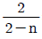
=1.14 이다.)- 약 3950m
- 약 4250m
- 약 5280m
- 약 6510m
(정답률: 58%)
8. 대기층은 물리적 및 화학적 성질에 따라서 고도별로 분류가 되어 있다. 지표면으로부터 상공으로 올바르게 배열된 것은?
- 대류권 → 중간권 → 성층권 → 열권
- 대류권 → 성층권 → 중간권 → 열권
- 대류권 → 중간권 → 열권 → 성층권
- 대류권 → 열권 → 중간권 → 성층권
(정답률: 85%)
9. 대기오염원의 영향을 평가하는 방법 중 분산모델에 관한 설명으로 가장 거리가 먼 것은?
- 지형 및 오염원의 조업조건에 영향을 받는다.
- 시나리오 작성이 곤란하고, 미래예측이 어렵다.
- 먼지의 영향평가는 기상의 불확실성과 오염원이 미확인인 경우에 문제점을 가진다.
- 오염물의 단기간 분석시 문제가 된다.
(정답률: 82%)
10. 먼지입자의 크기에 관한 설명으로 옳지 않은 것은?
- 공기역학적 직경이 대상 입자상 물질의 밀도를 고려한데 반해, 스토크스 직경은 단위밀도(1g/cm3)를 갖는 구형입자로 가정하는 것이 두 개념의 차이점이다.
- 스토크스 직경은 알고자 하는 입자상 물질과 같은 밀도 및 침강속도를 갖는 입자상 물질의 직경을 말한다.
- 공기역학적 직경은 먼지의 호흡기 침착, 공기정화기의 성능조사 등 입자의 특성파악에 주로 이용된다.
- 공기중 먼지 입자의 밀도가 1g/cm3 보다 크고, 구형에 가까운 입자의 공기역학적 직경은 실제 직경보다 항상 크다.
(정답률: 79%)
11. 인체 내에 축적되어 영향을 주는 오염물질 중 하나로 혈액 속의 헤모글로빈과 결합하여 카르복시헤모글로빈을 형성하는 것은?
- NO
- O3
- CO
- SO3
(정답률: 79%)
12. 다음 대기오염물질의 분류 중 2차 오염물질에 해당하지 않는 것은?
- NOCl
- 알데하이드
- 케톤
- N2O3
(정답률: 75%)
13. 일산화탄소에 관한 설명으로 옳지 않은 것은?
- 남위 30도 부근에서 최대농도를 나타내며, 대기 중 배경농도는 0.⑤ppm 정도이며, 남반구는 0.1-0.2ppm, 북반구는 0.01-0.03ppm 정도이다.
- 일산화탄소는 토양박테리아의 활동에 의해 이산화탄소로 산화되어 대기 중에서 제거된다.
- 대기 중 비에 의한 영향을 거의 받지 않는다.
- 다른 물질에의 흡착현상은 거의 나타내지 않는다.
(정답률: 69%)
14. 대기오염물질 중에서 대기 내의 체류시간 순서배열로 옳은 것은? (단, 긴 시간 ＞짧은시간)
- NO2 ＞SO2 ＞CO ＞CH4
- O2 ＞N2 ＞CO ＞CH4
- CO ＞N2 ＞SO2 ＞CH4
- N2 ＞CH4 ＞CO ＞SO2
(정답률: 71%)
15. 대기오염사건과 기온역전에 관한 설명으로 옳지 않은 것은?
- 로스앤젤레스 스모그사건은 광화학스모그에 의한 침강성 역전이다.
- 런던스모그 사건은 주로 자동차 배출가스 중의 질소산화물과 반응성 탄화수소에 의한 것이다.
- 침강역전은 고기압 중심부분에서 기층이 서서히 침강하면서 기온이 단열변화로 승온되어 발생하는 현상이다.
- 복사역전은 지표에 접한 공기가 그 보다 상공의 공기에 비하여 더 차가워져서 생기는 현상이다.
(정답률: 79%)
16. 고도가 증가함에 따라 온위가 변하지 않고 일정한 대기의 안정도는 어떤 상태인가?
- 불안정
- 안정
- 중립
- 역전
(정답률: 70%)
17. 다음은 바람장미에 관한 설명이다. ( )안에 가장 알맞은 것은?
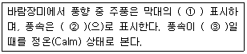
- ① 길이를 가장 길게, ② 막대의 굵기, ③ 0.2m/s
- ① 굵기를 가장 굵게, ② 막대의 길이, ③ 0.2m/s
- ① 길이를 가장 길게, ② 막대의 굵기, ③ 0.5m/s
- ① 굵기를 가장 굵게, ② 막대의 길이, ③ 0.5m/s
(정답률: 81%)
18. 굴뚝에서 배출된 연기의 모양에 관한 설명으로 옳지 않은 것은?
- Trapping 형은 보통 고기압지역에서 상공에 공중역전층이 있고, 지표 부근에 복사역전층이 있을 때 생기는 현상이다.
- Looping 형은 굴뚝이 낮으면 풍하쪽 지상에 강한 오염원이 생기며, 저ㆍ고기압에 상관없이 발생한다.
- Fumigation 형은 전형적인 가우시안 분포의 모양을 나타내며, 지면 가까이에는 거의 오염영향이 미치지 않는다.
- Fanning 형은 대기가 매우 안정한 상태일 때에 아침과 새벽에 잘 발생하며, 강한 역전조건에서 잘 생긴다.
(정답률: 61%)
19. 질소산화물(NOx)에 관한 설명으로 가장 거리가 먼 것은?
- N2O는 대류권에서는 온실가스로 성층권에서는 오존층 파괴물질로서 보통 대기 중에 약 0.5ppm 정도 존재한다.
- 연소과정 중 고온에서는 90% 이상이 NO로 발생한다.
- NO2는 적갈색, 자극성 기체로 독성이 NO보다 약 5배 정도나 더 크다.
- NO독성은 오존보다 10-15배 강하며 폐렴, 폐수종을 일으키며, 대기 중에 체류시간은 20-100년 정도이다.
(정답률: 78%)
20. 고속도로상의 교통밀도가 시간당 5000대 이고, 차량의 평균속도가 100km/h이다. 차량 한 대의 탄화수소 방출량이 2×10-2g/s 일 때, 고속도로상에서 방출되는 탄화수소의 총량(g/sㆍm)은?
- 0.1
- 0.01
- 0.001
- 0.0001
(정답률: 63%)
2과목: 연소공학
21. C 84%, H 13%, S 2%, N 1% 의 중유를 1kg 당 14Sm3 의 공기로 완전연소시킨 경우 실제 습배기가스 중 SO2 는 몇 ppm(용량비)이 되는가? (단, 중유 중의 황은 모두 SO2가 되는 것으로 가정한다.)
- 약 2000 ppm
- 약 1800 ppm
- 약 1120 ppm
- 약 950 ppm
(정답률: 51%)
22. 고체연료 연소장치 중 하급식 연소방법으로 연소과정이 미착화탄 → 산화층 → 환원층 → 회층으로 변하여 연소되고, 연료층을 항상 균일하게 제어할 수 있고, 저품질 연료도 유효하게 연소시킬 수 있어 쓰레기 소각로에 많이 이용되는 화격자 연소장치로 가장 적합한 것은?
- 포트식 스토커(Pot Stoker)
- 플라즈마 스토커(Plasma Stoker)
- 로타리 킬른((Rotary Kiln)
- 체인 스토커(Chain Stoker))
(정답률: 84%)
23. 기체연료의 압력을 2kg/cm2 이상으로 공급하므로 연소실 내의 압력은 정압이며, 소형의 가열로에 사용되는 버너는?
- 고압버너
- 저압버너
- 송풍버너
- 선회버너
(정답률: 56%)
24. 연료 등의 연소 시에 과잉공기의 비율을 높임으로써 생기는 현상으로 옳지 않은 것은?
- 에너지손실이 커진다.
- 연소가스의 희석효과가 높아진다.
- 화염의 크기가 커지고 연소가스 중 불완전 연소물질의 농도가 증가한다.
- CH4, CO 및 C 등 연료 중 가연성 물질의 농도가 감소되는 경향을 보인다.
(정답률: 75%)
25. Octane 이 완전연소 할 때 이론적인 공기와 연료의 질량비를 구하면?
- 9.7 kg air/kg fuel
- 11.4 kg air/kg fuel
- 15.1 kg air/kg fuel
- 19.3 kg air/kg fuel
(정답률: 62%)
26. 매연 발생에 관한 설명으로 옳지 않은 것은?
- 연료의 탄소/수소비가 클수록 매연이 생기기 쉽다.
- 산화하기 쉬운 탄화수소는 매연 발생이 적다.
- 탄화수소의 탈수소가 용이할수록 매연 발생이 쉽다.
- 증합반응이 일어나기 쉬운 탄화수소 일수록 매연 발생이 적다.
(정답률: 70%)
27. 석유류의 비중이 커질 때의 특성으로 거리가 먼 것은?
- 탄화수소비(C/H)가 커진다.
- 발열량은 감소한다.
- 화염의 휘도가 작아진다.
- 착화점이 높아진다.
(정답률: 51%)
28. 다음 중 디젤기관의 노킹(Diesel Koncking) 방지법으로 가장 적합한 것은?
- 세탄가가 10 정도로 낮은 연료를 사용한다.
- 연료 분사개시 때 분사량을 증가시킨다.
- 기관의 압축비를 높여 압축압력을 높게 한다.
- 기관 내로 분사된 연료를 한꺼번에 발화시킨다.
(정답률: 71%)
29. 사진현상을 하였더니 현상의 속도상수가 17℃일 때에 비하여 26℃에서 2배 였다. 활성화에너지(cal/mole)는?
- 12000
- 12670
- 12970
- 13270
(정답률: 44%)
30. 연소용 공기의 일부를 미리 연료와 혼합하고, 나머지 공기는 연소실 내에서 혼합하여 확산 연소시키는 연소방식으로 소형 또는 중형 버너로 널리 사용되는 기체연료의 연소방식은?
- 부분연소
- 간헐연소
- 연속연소
- 부분예혼합연소
(정답률: 82%)
31. 다음 연료 및 연소에 관한 설명으로 옳지 않은 것은?
- 휘발유, 등유, 경유, 중유 중 비점이 가장 높은 연료는 휘발유이다.
- 연소라 함은 고속의 발열반응으로 일반적으로 빛을 수반하는 현상의 총칭이다.
- 탄소성분이 많은 중질유 등의 연소에서는 초기에는 증발연소를 하고, 그 열에 의해 연료성분이 분해되면서 연소한다.
- 그을림연소는 숯불과 같이 불꽃을 동반하지 않는 열분해와 표면연소의 복합 형태라 볼 수 있다.
(정답률: 72%)
32. Thermal NOx를 대상으로 한 저 NOx 연소법으로 가장 거리가 먼 것은?
- 배기가스 재순환
- 연료대체
- 희박예혼합연소
- 수분사와 수증기분사
(정답률: 64%)
33. 유동층 연소에 관한 설명으로 거리가 먼 것은?
- 부하변동에 따른 적응성이 낮은 편이다.
- 높은 열용량을 갖는 균일 온도의 층내에서는 화염 전파는 필요없고 층의 온도를 유지할 만큼의 발열만 있으면 된다.
- 분탄을 미분쇄 투입하여 석탄 입자의 체류시간을 짧게 유지한다.
- 주방쓰레기, 슬러지 등 수분함량이 높은 폐기물을 층내에서 건조와 연소를 동시에 할 수 있다.
(정답률: 66%)
34. 대형 소각로에 사용하는 가동식 화격자 중 화격자 상에서 건조, 연소 및 후연소가 이루어지며 쓰레기의 교반 및 연소조건이 양호하고 소각효율이 매우 높으나 화격자의 마모가 많은 것은?
- 역동식 화격자
- 회전 로울러식 화격자
- 부채형 반전식 화격자
- 계단식 화격자
(정답률: 72%)
35. 액체연료의 연소장치에 관한 설명으로 옳지 않은 것은?
- 유압식 분무식 버너는 대용량 버너제작이 용이하다.
- 고입 기류분무식 버너는 연소 시 소음이 큰 편이다.
- 회전식 버너는 유압식 버너에 비해 분무화 입경이 작은 편이다.
- 저압 기류분무식 버너에서 분무에 필요한 공기량은 이론연소 공기량의 30-50% 정도이면 된다.
(정답률: 58%)
36. 유황 함유량이 1.5%인 중유를 시간당 100톤 연소시킬 때 SO2의 배출량(m3/hr)은? (단, 표준상태 기준, 유황은 전량이 반응하고, 이 중 5%는 SO3로서 배출되며, 나머지는 SO2로 배출된다.)
- 약 300
- 약 500
- 약 800
- 약 1000
(정답률: 54%)
37. 창고에 화재가 발생하여 적재된 어떤 화합물이 10분 동안에 1/2이 소실되었다. 이 화합물의 80%가 소실되는데 걸리는 시간은? (단, 연소반응은 2차반응으로 진행된다.)
- 30분
- 40분
- 50분
- 60분
(정답률: 51%)
38. 석유의 물성치에 관한 설명으로 옳지 않은 것은?
- 경질유는 방향족계 화합물을 10% 미만 함유한다고 할 수 있다.
- 점도가 낮을수록 유동점이 낮아지므로 일반적으로 저점도의 중유는 고점도의 중유보다 유동점이 낮다.
- 석유의 동점도가 감소하면 끓는점과 인화점이 높아지고, 연소가 잘 된다.
- 석유의 비중이 커지면 탄화수소비(C/H)가 증가한다.
(정답률: 65%)
39. 일반적인 고체연료의 원료 조성에 관한 설명으로 옳지 않은 것은?
- 고체연료의 C/H 비는 15-20 정도의 범위이다.
- 고체연료의 분자량은 평균하여 150 전 후이다.
- 고체연료는 액체연료에 비하여 수소함유량이 적다.
- 고체연료는 액체연료에 비하여 산소함유량이 크다.
(정답률: 50%)
40. 다음 각 연료의 (CO2)max 값(%)으로 가장 거리가 먼 것은?
- 탄소: 21
- 고로가스: 15 - 16
- 갈탄: 19.0 - 19.5
- 코우크스: 20.0 - 20.5
(정답률: 56%)
3과목: 대기오염 방지기술
41. 유해가스를 촉매연소법으로 처리할 때 촉매의 수명을 단축시키거나 효율을 감소시킬 수 있는 물질과 거리가 먼 것은?
- Fe
- Si
- P
- Pd
(정답률: 62%)
42. 세정집진장치 중 액가스비가 10-50L/m3 정도로 다른 가압수식에 비해 10배 이상이며, 다량의 세정액이 사용되어 유지비가 고가이므로 처리가스량이 많지 않을 때 사용하는 것은?
- Venturi Scrubber
- Theisen Washer
- Jet Scrubber
- Impluse Scrubber
(정답률: 58%)
43. S성분 3%를 함유한 중유 10ton/hr를 연소하는 보일러가 있다. 연소를 통해 S성분은 100% SO2로 변화하고, 보일러의 배기가스를 NaOH 수용액으로 세정하여 S성분을 Na2SO3로 회수할 경우에 이론적으로 필요한 NaOH의 양은? (단, 사용된 NaOH의 순도는 80%이다. )
- 375kg/hr
- 469kg/hr
- 750kg/hr
- 938kg/hr
(정답률: 33%)
44. 환기시설 설계에 사용되는 보충용 공기에 관한 설명으로 옳지 않은 것은?
- 보충용 공기가 배기용 공기보다 약 10 - 15% 정도 많도록 조절하여 실내를 약간 양압으로 하는 것이 좋다.
- 여름에는 보통 외부공기를 그대로 공급을 하지만, 공정내의 열부하가 커서 제어해야 하는 경우에는 보충용 공기를 냉각하여 공급한다.
- 보충용 공기는 환기시설에 의해 작업장 내에서 배기된 만큼의 공기를 작업장내로 재공급해야 하는 공기의 양을 말한다.
- 보충용 공기의 유입구는 작업장이나 다른 건물의 배기구에서 나온 유해물질의 유입을 유도할 수 있는 위치로서 바닥에서 1 - 1.5m 정도에서 유입되도록 한다.
(정답률: 61%)
45. 송풍기를 원심력과 축류형으로 분류할 때 다음 중 축류형에 해당하는 것은?
- 프로펠러형
- 방사경사형
- 비행기날개형
- 전향날개형
(정답률: 68%)
46. 레이놀드 수(Reynold Number)에 관한 설명으로 옳지 않은 것은? (단, 유체 흐름 기준)
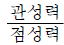
로 나타낼 수 있다.- 무차원의 수이다.
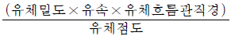
로 나타낼 수 있다.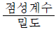
로 나타낼 수 있다.
(정답률: 71%)
47. 유해가스 흡수장치 중 다공판탑에 관한 설명으로 옳지 않은 것은?
- 비교적 대량의 흡수액이 소요되고, 가스겉보기 속도는 10-20m/s 정도이다.
- 액가스비는 0.3-5L/m3, 압력손실은 100-200mmH2O/단 정도이다.
- 고체부유물 생성시 적합하다.
- 가스량의 변동이 격심할 때는 조업할 수 없다.
(정답률: 50%)
48. 전기집진장치의 각종 장해에 따른 대책으로 가장 거리가 먼 것은?
- 미분탄 연소 등에 따라 역전리 현상이 발생할 때에는 집진극의 타격을 강하게 하거나, 빈도수를 늘린다.
- 재비산이 발생할 때에는 처리가스의 속도를 낮추어 준다.
- 먼지의 비저항이 비정상적으로 높아 2차 전류가 현저히 떨어질 때에는 조습용 스프레이의 수량을 줄인다.
- 먼지의 비저항이 비정상적으로 높아 2차 전류가 현저히 떨어질 때에는 스파크 횟수를 늘린다.
(정답률: 65%)
49. 여과집진장치에서 여과포의 탈진방법의 유형이라고 볼 수 없는 것은?
- 진동형
- 역기류형
- 충격제트기류 분사형
- 승온형
(정답률: 71%)
50. 유해오염물질과 그 처리방법에 관한 설명으로 옳지 않은 것은?
- 벤젠은 촉매연소법이나 활성탄 흡착법을 사용하여 제거한다.
- 비소는 염산용액으로 포집 후, Ca(OH)2에 대한 피흡착력을 이용하여 제거한다.
- 염화인은 충전물을 채운 흡수탑을 이용하여 알칼리성 용액에 흡수시켜 제거한다.
- 크롬산 미스트는 비교적 입자크기가 크고 친수성이므로 수세법으로 제거한다.
(정답률: 47%)
51. 헨리법칙을 이용하여 유도된 총괄물질이동계수와 개별물질 이동계수와의 관계를 옳게 나타낸 식은? (단, KG: 기상총괄물질이동계수, kL: 액상물질이동계수, kg: 기상물질이동계수, H: 헨리정수)
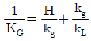
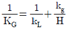
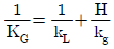
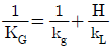
(정답률: 57%)
52. 먼지부하량이 20.0g/m3인 공기흐름을 제거효율이 70%인 싸이클론과 95%인 전기집진장치를 순차적으로 적용하여 처리하고자 할 경우 총괄 제거효율은?
- 88.5%
- 91.5%
- 98.5%
- 99.5%
(정답률: 64%)
53. 실내에서 발생하는 CO2의 양이 시간당 0.3m3일 때 필요한 환기량? (단, CO2의 허용농도와 외기의 CO2농도는 각각 0.1%와 0.03% 이다.)
- 약 430m3/h
- 약 320m3/h
- 약 210m3/h
- 약 145m3/h
(정답률: 44%)
54. 냄새물질의 화학구조에 대한 설명으로 가장 거리가 먼 것은?
- 골격이 되는 탄소수는 저분자일수록 관능기 특유의 냄새가 강하고 자극적이나 8-13에서 가장 향기가 강하다.
- 불포화도(2중결함 및 3중결합의 수)가 높으면 냄새가 보다 강하게 난다.
- 분자내 수산기의 수가 증가할수록 냄새가 강하다.
- 락톤 및 케톤화합물은 환상이 크게 되면 냄새가 강해진다.
(정답률: 70%)
55. 유해가스의 연소처리에 관한 설명으로 가장 거리가 먼 것은?
- 직접연소법은 경우에 따라 보조연료나 보조공기가 필요하며 대체로 오염물질의 발열량이 연소에 필요한 전체열량의 50% 이상일 때 경제적으로 타당하다.
- 직접연소법은 After Burner법 이라고도 하며 HC, H2, NH3, HCN 및 유독가스 제거법으로 사용된다.
- 가열연소법은 배기가스 중 가연성 오염물질의 농도가 매우 높아 직접연소법으로 불가능할 경우에 주로 사용되고 조업의 유동성이 적어 NOx 발생이 많다.
- 가열연소법에서 연소로 내의 체류시간은 0.2-0.8초 정도이다.
(정답률: 50%)
56. 다음 입자상 물질의 크기를 결정하는 방법 중 입자상 물질의 그림자를 2개의 등면적으로 나눈 선의 길이를 직경으로 하는 입경은?
- 마틴직경
- 등면적경
- 피렛직경
- 투영면적경
(정답률: 75%)
57. 원통형 백필터를 사용하여 배기가스 2000m3/min를 처리 하려고 한다. 가스 중 먼지농도는 15g/m3, 백필터의 지름은 350mm, 유효높이가 10m 이고, 겉보기 여과속도를 1.8cm/sec로 할 때, 필요한 백필터의 개수는?
- 59개
- 169개
- 303개
- 530개
(정답률: 55%)
58. 흡착능에 관한 설명으로 옳지 않은 것은?
- 보전력은 탈착되지 않고 흡착제에 남아있는 가스의 무게를 흡착제의 무게로 나눈 값을 의미한다.
- 활성탄 흡착상에 유기혼합증기가 통과되면 최초엔 비점이 높은 물질의 흡착량이 많아지지만 시간경과에 따라 증기의 종류에 관계없이 같은 양의 증기가 흡착된다.
- 여러 가지 유기증기가 혼합되어 있는 배출가스를 흡착할 때 흡착율은 균일하지 않으며 이것은 이들 증기의 휘발성에 역비례한다.
- 흡착질의 농도가 낮을 경우엔 발열이 흡착율에 미치는 영향이 크지 않지만 고농도일 경우는 흡착율이 저하되므로 냉각을 해 주어야 한다.
(정답률: 42%)
59. 다음 중 가스의 압력손실은 작은 반면, 세정액 분무를 위해 상당한 동력이 요구되며, 장치의 압력손실은 2-20mmH2O, 가스 겉보기 속도는 0.2-1m/s 정도인 세정집진장치에 해당하는 것은?
- Venturi Scrubber
- Cyclone Scrubber
- Spray Tower
- Packed Tower
(정답률: 54%)
60. 유량측정에 사용되는 가스 유속측정 장치 중 작동원리로 Bernoulli식이 적용되지 않는 것은?
- 벤츄리장치(Venturi Meter)
- 오리피스장치(Orifice Meter)
- 건조가스장치(Dry gas meter)
- 로터미터(Rotameter)
(정답률: 56%)
4과목: 대기오염 공정시험기준(방법)
61. 굴뚝 등을 통하여 대기중으로 배출되는 가스상 물질을 분석하기 위한 시료채취방법에 대한 주의사항 중 옳지 않은 것은?
- 흡수병을 만일 공용으로 할 때에는 대상 성분이 달라질 때마다 묽은 산 또는 알칼리 용액과 물로 깨끗이 씻은 다음 다시 흡수액으로 3회 정도 씻은 후 사용한다.
- 가스미터는 500mmH2O 이내에서 사용한다.
- 습식 가스미터를 이동 또는 운반할 때에는 반드시 물을 빼고, 오랫동안 쓰지 않을 때에도 그와 같이 배수한다.
- 굴뚝내의 압력이 매우 큰 부압(-300mmH2O 정도 이하)인 경우에는, 시료 채취용 굴뚝을 부설하여 용량이 큰 펌프를 써서 시료가스를 흡입하고 그 부설한 굴뚝에 채취구를 만든다.
(정답률: 63%)
62. 어느 굴뚝의 측정공에서 피토우관으로 가스의 압력을 측정해 보니 동압이 15mmH2O이었다. 이 가스의 유속은? (단, 사용한 피토우관의 계수(C)는 0.85 이며, 가스의 단위체적당 질량은 1.2kg/m3로 한다.)
- 약 12.3m/s
- 약 13.3m/s
- 약 15.3m/s
- 약 17.3m/s
(정답률: 57%)
63. 원자흡수분광광도법(원자흡광광도법)의 검량선 작성법에 관한 설명으로 가장 거리가 먼 것은?
- 검량선은 일반적으로 저농도 영역에서 양호한 직선을 나타내므로 저농도 영역에서 작성하는 것이 좋다.
- 검량선법의 경우에는 적어도 3종류 이상의 농도의 표준 시료용액에 대하여 흡광도를 측정하여 작성한다.
- 표준첨가법은 여러 개의 같은 양의 분석시료에 각각 다른 농도의 표준물질을 가하여 흡광도를 구하여 작성한다.
- 내부표준법에 가하는 표준원소는 목적원소와 화학적, 물리적으로 다른 성질의 원소로서 목적원소와 흡광도비를 구하는 동시 측정을 행한다.
(정답률: 34%)
64. 배출가스 중 금속화합물을 원자흡수분광광도법으로 분석할 때 간섭물질에 관한 설명으로 옳지 않은 것은?
- 시료 내 납, 카드뮴, 크롬의 양이 미량으로 존재하거나 방해물질이 존재할 경우, 용매추출법을 적용하여 정량할 수 있다.
- 나켈 분석 시 다량의 탄소가 포함된 시료의 경우, 시료를 채취한 여과지를 적당한 크기로 잘라서 자기도가니에 넣어 전기로를 사용하여 800℃에서 30분 이상 가열한 후 전처리 조작을 행한다.
- 아연 분석 시 213.8nm 측정파장을 이용할 경우 불꽃에 의한 흡수 때문에 바탕선(baseline)이 높아지는 경우가 있다.
- 철 분석 시 규소(Si)를 다량 포함하고 있을 때는 0.5% 인산용액을 첨가하여 분석하고, 유기산(특히 시트르산)이 다량 포함되어 있을 때는 0.2% 염화칼슘(CaCl2, Calcium chloride)용액을 첨가하여 간섭을 줄일 수 있다.
(정답률: 56%)
65. 다음은 배출가스 중 납화합물의 자외선/가시선 분광법에 관한 설명이다. ( )안에 알맞은 것은?
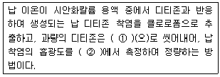
- ① 시안화칼륨용액, ② 520nm
- ① 사염화탄소, ② 520nm
- ① 시안화칼륨용액, ② 400nm
- ① 사염화탄소, ② 400nm
(정답률: 48%)
66. 다음은 환경대기중의 석면농도를 측정하기 위해 위상차현미경을 사용한 계수방법에 관한 사항이다. ( )안에 알맞은 것은?
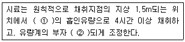
- ① 1L/min, ② 1L/min
- ① 1L/min, ② 10L/min
- ① 10L/min, ② 1L/min
- ① 10L/min, ② 10L/min
(정답률: 68%)
67. 다음은 환경기준 시험을 위한 채취지점수(측정점수)의 결정시 TM좌표에 의한 방법을 설명한 것이다. ( )안에 알맞은 것은?
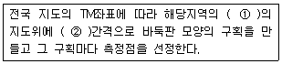
- ① 1 : 5000 이상, ② 200-300m
- ① 1 : 5000 이상, ② 2-3km
- ① 1 : 25000 이상, ② 200-300m
- ① 1 : 25000 이상, ② 2-3km
(정답률: 62%)
68. 일반적으로 사용하는 이온크로마토그래피의 구성장치 중 분리관에 관한 설명으로 가장 거리가 먼 것은?
- 이온교환체의 구조면에서는 표층피복형, 표층박막형, 전다공성 미립자형이 있다.
- 양이온 교환체는 표면에 슬폰산기를 보유한다.
- 금속이온 분리용으로는 스테인레스관이 효과적이다.
- 분리관은 에폭시수지관 또는 유리관 등이 사용된다.
(정답률: 57%)
69. 다음은 배출가스 중 입자상 아연화합물의 자외선/가시선 분광법에 관한 설명이다. ( )안에 알맞은 것은?
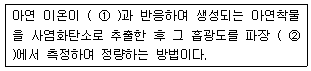
- ① 디티존 , ② 460nm
- ① 디티존 , ② 535nm
- ① 디에틸디티오카바민산나트륨 , ② 460nm
- ① 디에틸디티오카바민산나트륨 , ② 535nm
(정답률: 54%)
70. 환경대기 중 일산화탄소를 비분산 적외선 분석법(자동연속)으로 분석할 경우 측정기기의 성능기준으로 옳지 않은 것은?
- 측정기의 측정눈금 범위는 원칙적으로 0-50ppm 또는 0-100ppm으로 한다.
- 재현성 측정 시 동일조건에서 제로가스와 스팬가스를 번갈아 3회 도입해서 각각의 측정치의 평균치로부터의 편차를 구한다. 이 편차가 최대눈금치의 ±2%이내여야 한다.
- 스팬가스를 흘려 보냈을 때 정상적인 지시 변동의 범위는 최대눈금치의 ±2%이내이어야 한다.
- 시료대기채취구를 통하여 설정유량의 교정용가스를 도입시켜 측정기의 지시치가 스팬가스의 90% 응답을 나타내는 시간은 5분이하여야 한다.
(정답률: 55%)
71. 다음은 굴뚝 배출가스 중의 산소측정방법에 관한 설명이다. 가장 적합한 것은?
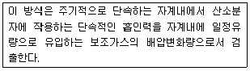
- 질코니아 방식
- 담벨형 방식
- 압력검출형 방식
- 전극 방식
(정답률: 67%)
72. 배출가스 중 다이옥신 및 퓨란류 분석을 위한 시료채취방법에 관한 설명으로 옳지 않은 것은?
- 흡인노즐에서 흡인하는 가스의 유속은 측정점의 배출가스유속에 대해 상대오차 -5~+5%의 범위내로 한다.
- 시간당 처리능력이 200kg 미만의 소각시설 중 일괄 투입식 연소방식에 한하여 1회 소각시간(폐기물을 소각로에 투입하고 연소가 종료되는데 까지 소요되는 시간)이 4시간 미만 2시간이상의 경우는 시료채취시 흡인가스량을 2시간, 평균 1.5Sm3이상으로 할 수 있다.
- 덕트내의 압력이 부압인 경우에는 흡인장치를 덕트밖으로 빼낸 후에 흡인펌프를 정지시킨다.
- 배출가스 시료를 채취하는 동안에 각 흡수병은 얼음 등으로 냉각시키며, XAD-2수지 포집관부는 -50℃ 이하로 유지하여야 한다.
(정답률: 59%)
73. 환경대기중의 석면농도를 측정하기 위한 멤브레인필터에 포집한 대기부유먼지중의 석면섬유를 위상차현미경을 사용하여 계수하는 방법에 관한 설명으로 옳지 않은 것은?(오류 신고가 접수된 문제입니다. 반드시 정답과 해설을 확인하시기 바랍니다.)
- 석면먼지의 농도표시는 표준상태(0℃, 760mmHg)의 기체 1mL 중에 함유된 석면섬유의 개수(개/mL)로 표시한다.
- 멤브레인 필터는 셀룰로오스 에스테르를 원료로 한 얇은 다공성의 막으로, 구멍의 지름은 평균 0.01-10㎛의 것이 있다.
- 필터를 광굴절율 1.5 전후의 불휘발성 용액에 담그면, 투명해지면 입자를 계수하기 쉽다.
- 석면섬유의 광굴절율은 보통 2.0 이상이어서 위상차현미경으로 식별하기 용이하다.
(정답률: 41%)
74. 굴뚝 배출가스 중 황산화물의 시료채취 장치에 관한 설명으로 옳지 않은 것은?
- 시료채취관은 배출가스중의 황산화물에 의해 부식되지 않는 재질, 예를 들면 유리관, 석영관, 스테인레스강관 등을 사용한다.
- 시료중의 황산화물과 수분이 응축되지 않도록 시료채취관과 흡수병 사이를 가열한다.
- 시료중에 먼지가 섞여 들어가는 것을 방지하기 위하여 채취관의 앞 끝에 적당한 여과재를 넣는다.
- 가열부분에 있어서의 배관의 접속은 채취관과 같은 재질, 혹은 보통 고무관을 사용한다.
(정답률: 64%)
75. 반경이 2.5m인 원형굴뚝의 먼지측정을 위한 측정점수는?
- 12
- 16
- 20
- 24
(정답률: 66%)
76. 굴뚝배출가스중 아황산가스의 자동연속 측정방법 중 자외선흡수분석계에 관한 설명으로 옳지 않은 것은?
- 광원 : 자업수소방전관 또는 저압수은등이 사용된다.
- 분광기: 프리즘 또는 회절격자분광기를 이용하여 자외선영역 또는 가시광선영역의 단색광을 얻는데 사용된다.
- 검출기: 자외선 및 가시광선에 감도가 좋은 광전자증배관 또는 광전관이 이용된다.
- 시료셀: 시료셀은 200-500mm의 길이로 시료가스가 연속적으로 통과할 수 있는 구조로 되어 있어야 한다.
(정답률: 55%)
77. 다음은 굴뚝 배출가스 중 베릴륨 분석방법에 관한 설명이다. ( )안에 알맞은 것은?
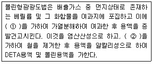
- ① 황산, ② 4-메틸-2-펜타논
- ① 황산, ② 디티존사염화탄소용액(0.0⑤W/V%)
- ① 질산, ② 4-메틸-2-펜타논
- ① 질산, ② 디티존사염화탄소용액(0.0⑤W/V%)
(정답률: 52%)
78. 다음은 연료용 유류중의 황함유량을 측정하기 위한 분석방법 중 연소관식 공기법에 관한 설명이다. ( )안에 알맞은 것은?
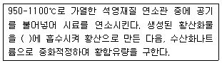
- 과산화수소(3%)
- 과망간산칼륨
- 증크롬산칼륨
- 수산화칼륨
(정답률: 60%)
79. 배출가스 중 비소화합물(흑연로원자흡수분광광도법) 측정방법에 관한 설명으로 옳지 않은 것은?
- 정량범위는 5-50㎍/L이며, 정밀도는 3-20% 이다.
- 기체상 비소는 흡수용액 중에 함유되어 있는 소량의 수산화이온(OH-)에 의해 심각한 간섭을 받으므로 염수소화물발생 원자흡수분광광도법으로 분석한다.
- 비소는 낮은 분석 파장 (193.7 nm)에서 측정하므로 원자화단계에서 매질성분에 의한 심각한 비특이성 흡수 및 산란에 의한 영향을 받을 수 있다.
- 비소 및 비소화합물 중 일부 화합물은 휘발성이 있으므로 채취 시료를 전처리하는 동안 비소의 손실 가능성이 있다.
(정답률: 33%)
80. 이온크로마토그래프법에서 사용하는 검출기 중 정전위 전극반응을 이용하는 것으로 검출감도가 높고 선택성이 있으며 전량검출기, 암페로 메트릭 검출기 등이 있는 것은?
- 전기 전도도 검출기
- 전기 화학적 검출기
- 전기 자외선 흡수 검출기
- 전기 가시선 흡수 검출기
(정답률: 53%)
5과목: 대기환경관계법규
81. 대기환경보전법령상 사업장별 환경기술인의 자격기준으로 가장 거리가 먼 것은?
- 3종사업장의 경우에는 배출시설 설치허가를 받거나 배출시설 설치신고가 수리된 자 또는 배출시설 설치허가를 받거나 수리된 자가 해당 사업장의 배출시설 및 방지시설 업무에 종사하는 피고용인 중에서 임명하는 자 1명 이상을 환경기술인으로 둔다.
- 대기환경기술인이 『소음ㆍ진동관리법』에 따른 소음ㆍ진동환경기술인 자격을 갖춘 경우에는 소음ㆍ진동환경기술인을 겸임할 수 있다.
- 1종사업장과 2종사업장 중 1개월 동안 실제 작업한 날만을 계산하여 1일 평균 17시간 이상 작업하는 경우에는 해당 사업장의 기술인을 각각 2명 이상 두어야 한다.
- 배출시설 중 일반보일러만 설치한 사업장과 대기 오염물질 중 먼지만 발생하는 사업장은 5종사업장에 해당하는 기술인을 둘 수 있다.
(정답률: 49%)
82. 다중이용시설 등의 실내공기질 관리법규상 “목욕장”의 일산화탄소 실내공기질 유지기준은?
- 10ppm 이하
- 25ppm 이하
- 100ppm 이하
- 150ppm 이하
(정답률: 37%)
83. 대기환경보전법규상 특정대기유해물질이 아닌 것은?
- 니켈 및 그 화합물
- 이황화메틸
- 다이옥신
- 알루미늄 및 그 화합물
(정답률: 59%)
84. 환경정책기본법령상 이산화질소(NO2)의 대기환경기준은? (단, 연간평균치)
- 0.02ppm 이하
- 0.03ppm 이하
- 0.⑤ppm 이하
- 0.1ppm 이하
(정답률: 41%)
85. 대기환경보전법규상 환경기술인의 신규교육 시기와 횟수기준은? (단, 규정된 교육기관이며, 정보통신매체를 이용하여 원격교육을 하는 경우 제외)
- 환경기술인으로 임명된 날부터 6개월 이내에 1회
- 환경기술인으로 임명된 날부터 1년 이내에 1회
- 환경기술인으로 임명된 날부터 2년 이내에 1회
- 환경기술인으로 임명된 날부터 3년 이내에 1회
(정답률: 59%)
86. 대기환경보전법규상 총량규제를 하고자 할 때 고시내용에 반드시 포함될 사항으로 거리가 먼 것은? (단, 그 밖에 총량규제구역의 대기관리를 위하여 필요한 사항 등은 제외한다. )
- 대기오염물질의 저감계획
- 총량규제 대기오염물질
- 총량규제농도 및 환경영향평가
- 총량규제구역
(정답률: 42%)
87. 대기환경보전법령상 과태료 부과기준으로 옳지 않은 것은?
- 개별기준으로 환경기술인 등의 교육을 받게 하지 않은 경우 1차 위반 시 과태료 금액은 60만원이다.
- 부과권자는 과태료 금액의 2분의 1의 범위에서 그 금액을 줄일 수 있으나, 과태료르를 체납하고 있는 위반행위자에 대해서는 그러하지 아니하다.
- 위반행위의 횟수에 따른 과태료의 부과기준은 최근 1년간 같은 위반행위로 과태료 부과처분을 받은 경우에 적용한다.
- 개별기준으로 비산먼지 발생사업장으로 신고하지 아니한 경우 1차 위반 시 과태료 금액은 200만원이다.
(정답률: 39%)
88. 대기환경보전법규상 자동차연료형 첨가제의 종류가 아닌 것은? (단, 그 밖의 사항 등은 고려하지 않는다.)
- 세탄가첨가제
- 다목적첨가제
- 청정분산제
- 유동성향상제
(정답률: 38%)
89. 대기환경보전법규상 자동차 연료ㆍ첨가제 또는 촉매제 검사기관의 지정기준 중 자동차 연료 검사기관의 기술능력 및 검사장비기준으로 옳지 않은 것은?
- 검사원은 국가기술자격법 시행규칙에 의거 기계(자동차 분야), 화공 및 세라믹, 환경 직무분야의 기사자격 이상을 취득한 사람이어야 한다.
- 검사원은 2명 이상이어야 하며, 그 중 한 명은 해당 검사업무에 5년 이상 종사한 경험이 있는 사람이어야 한다.
- 휘발유ㆍ경유ㆍ바이오디젤(BD100) 검사를 위해 1ppm 이하 분석가능한 황함량분석기 1식을 갖추어야 한다.
- 휘발유ㆍ경유ㆍ바이오디젤 검사기관과 LPGㆍCNGㆍ바이오가스 검사기관의 기술능력 기준은 같으며, 두 검사업무를 함께 하려는 경우에는 기술능력을 중복하여 갖추지 아니할 수 있다.
(정답률: 49%)
90. 대기환경보전법령상 초과부과금 부과대상 오염물질이 아닌 것은?(관련 규정 개정전 문제로 여기서는 기존 정답인 4번을 누르면 정답 처리됩니다. 자세한 내용은 해설을 참고하세요.)
- 먼지
- 불소화합물
- 시안화수소
- 질소산화물
(정답률: 58%)
91. 대기환경보전법규상 자동차연료 제조기준 중 휘발유의 90% 유출온도(℃) 기준은? (단, 2009년 1월 1일부터 적용기준)
- 150 이하
- 160 이하
- 170 이하
- 180 이하
(정답률: 54%)
92. 다음은 다중이용시설 등의 실내공기질 관리법규상 실내공기질의 측정사항이다. ( )안에 알맞은 것은?
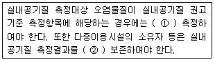
- ① 연 1회 , ② 1년간
- ① 연 2회 , ② 3년간
- ① 2년에 1회 , ② 3년간
- ① 2년에 1회 , ② 5년간
(정답률: 38%)
93. 악취방지법규상 지정악취물질이 아닌 것은?
- 황화수소
- 이산화황
- 다이메틸다이설파이드
- 아세트알데하이드
(정답률: 43%)
94. 환경정책기본법상 용어 중 “일정한 지역에서 환경오염 또는 환경훼손에 대하여 환경이 스스로 스용, 정화 및 복원하여 환경의 질을 유지할 수 있는 한계”를 의미하는 것은?
- 환경기준
- 환경한계
- 환경용량
- 환경표준
(정답률: 59%)
95. 다음은 대기환경보전법규상 대기오염 경보단계 중 “경보”해제기준이다. ( )안에 알맞은 것은?
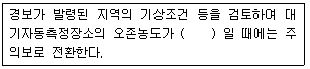
- 0.1 피피엠 이상 0.3피피엠 미만
- 0.12 피피엠 이상 0.3피피엠 미만
- 0.1 피피엠 이상 0.5피피엠 미만
- 0.12 피피엠 이상 0.5피피엠 미만
(정답률: 60%)
96. 대기환경보전법규상 환경기술인의 보수교육기준은? (단, 규정된 교육기관이며, 정보통신매체를 이용하여 원격교육을 하는 경우 제외)
- 신규교육을 받은 날을 기준으로 1년마다 1회
- 신규교육을 받은 날을 기준으로 2년마다 1회
- 신규교육을 받은 날을 기준으로 3년마다 1회
- 신규교육을 받은 날을 기준으로 5년마다 1회
(정답률: 47%)
97. 대기환경보전법령상 배출부과금 납부 의무자가 납부기한 전에 납부할 수 없다고 인정되면 징수유예하거나 분할납부 하게 할 수 있는데 이에 관한 사항으로 옳지 않은 것은?
- 부과금의 분할납부 기한 및 금액과 그 밖에 부과금의 부과징수에 필요한 사항은 시ㆍ도지사가 정한다.
- 초과부과금의 징수유예기간과 그 기간 중 분할납부 횟수 기준은 유예한 날의 다음날부터 2년 이내, 12회 이내로 한다.
- 기본부과금의 징수유예기간과 그 기간 중 분할납부 횟수 기준은 유예한 날의 다음날부터 다음 부과기간의 게시일 전일까지 4회 이내로 한다.
- 징수유예기간 내에도 징수할 수 없다고 인정되어 징수 유예기간을 연장하거나 분할납부의 횟수를 늘릴 경우, 이에 따른 징수유예기간의 연장은 유예한 날의 다음날부터 5년 이내로 하며, 분할납부의 횟수는 30회 이내로 한다.
(정답률: 51%)
98. 대기환경보전법상 대기오염 경보가 발령된 지역에서 자동차 운행제한이나 사업장 조업단축의 명령을 정당한 사유없이 위반한 자에 대한 벌칙기준으로 옳은 것은?
- 1년 이하의 징역이나 1천만원 이하의 벌금에 처한다.
- 1년 이하의 징역이나 500만원 이하의 벌금에 처한다.
- 500만원 이하의 벌금에 처한다.
- 300만원 이하의 벌금에 처한다.
(정답률: 38%)
99. 대기환경보전법령상 초과부과금 산정기준에서 오염물질 1킬로그램당 부과금액이 다음 중 가장 비싼 것은?
- 암모니아
- 이황화탄소
- 황화수소
- 불소화합물
(정답률: 45%)
100. 악취방지법규상 위임업무 보고사항 중 “악취검사기관의 지도ㆍ점검 및 행정처분 실적”보고횟수기준은?
- 연1회
- 연2회
- 연4회
- 수시
(정답률: 38%)